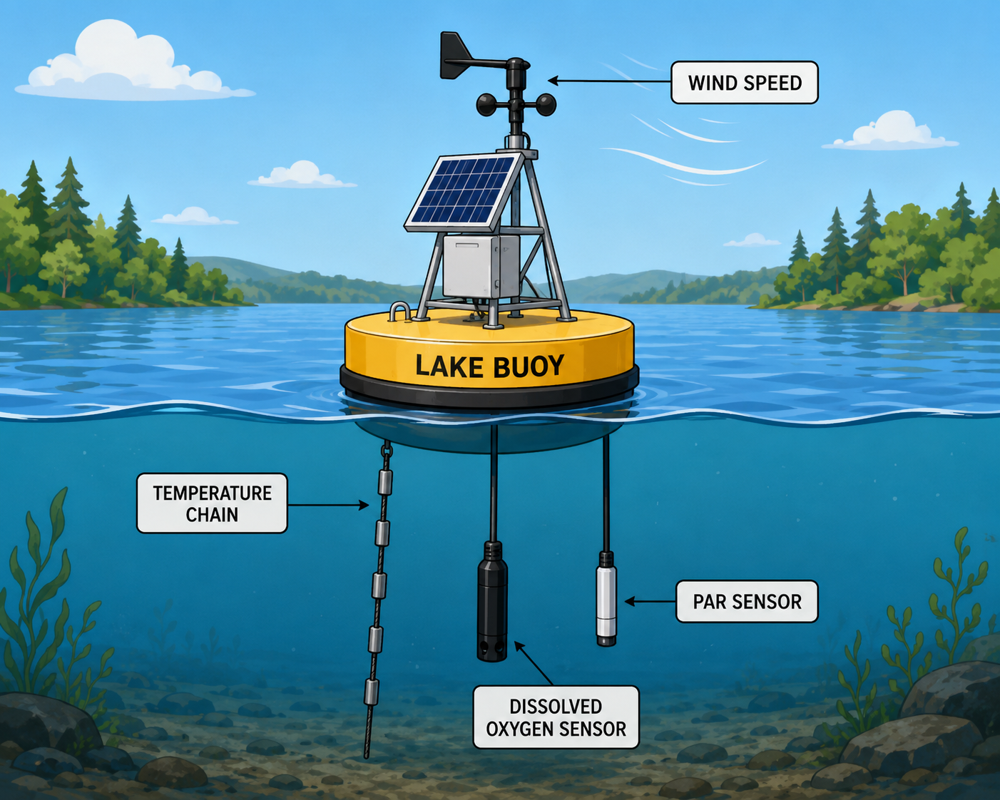

Buoys: continuous lake monitoring
Buoys give us crucial, continuous information about lakes that never stop changing. These floating platforms are prized for being versatile, and depending on how they're configured, a single buoy can track dozens of weather and water conditions at once, from physical variables like wind speed, water temperature, and wave height, to chemical and biological ones like pH, chlorophyll, and turbidity.
Above the waterline, a typical buoy carries a floating hull (often foam or fiberglass), weather sensors, solar panels to keep everything powered, a data logger and communications link to send readings back to shore, and a safety light so boaters can spot it after dark. Below the surface, a mooring line and anchor hold it in place while water sensors take their measurements.
That data serves far more than researchers: beachgoers checking conditions, anglers, water-treatment plant operators, and boaters all rely on it too. In Wisconsin, winter ice makes buoys seasonal equipment — crews deploy them each spring after ice-out and pull them back out each fall before ice-in, the same rhythm reflected throughout this lab.
Adapted from the Great Lakes Observing System (GLOS), "How Do Lake Buoys Work?"

This is a cartoon buoy with four sensors you'll see referenced in this lab. Real buoys come in many shapes and are outfitted with an array of different sensors.
- 💨 Wind speed — measured in the air above the buoy. Wind drives mixing and gas exchange between the lake and the atmosphere (Module 3).
- ☀️ PAR (light) — photosynthetically active radiation, measured just below the surface. This is the light that actually fuels photosynthesis.
- 🌡️ Temperature chain — a string of sensors at multiple depths, not just one. Together they track how the lake heats, cools, and separates into layers over the season.
- 🫧 Dissolved oxygen — continuous measurements reveal the lake's daily oxygen budget, allowing scientists to calculate photosynthesis, respiration. The sensor we will focus on in this lab.
Which definition matches this term?
🎉 Nice work — you're ready to start!
Ready to start?
Your answers to the questions throughout this lab are saved automatically as you go, and collected on the Your Responses page — that's where you'll turn them in at the end.